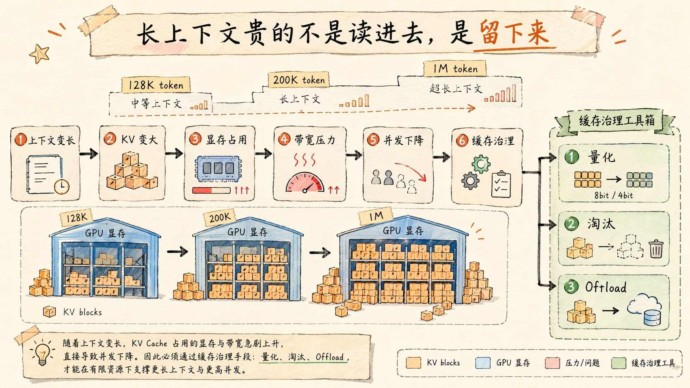
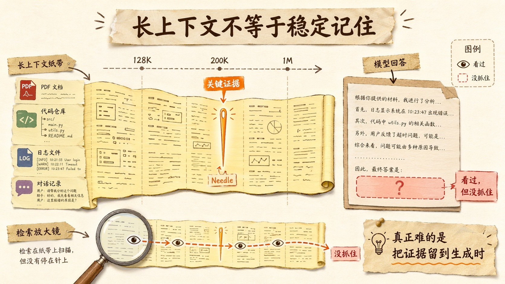
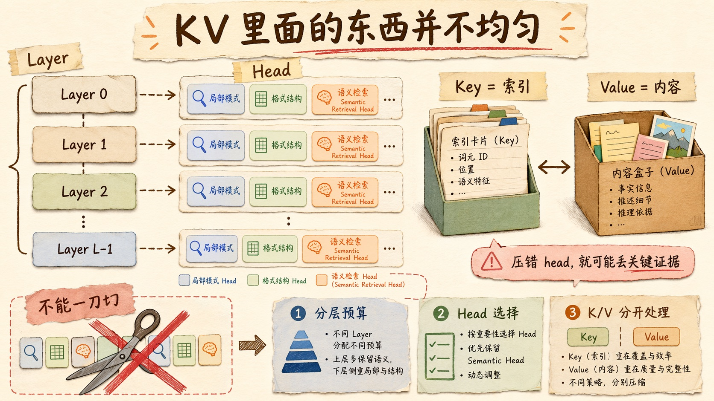
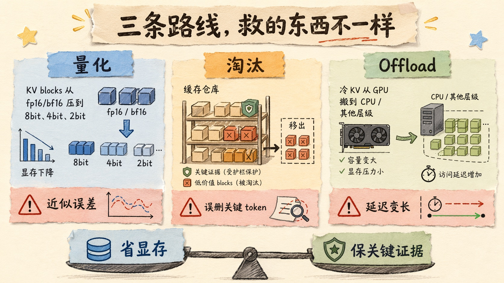
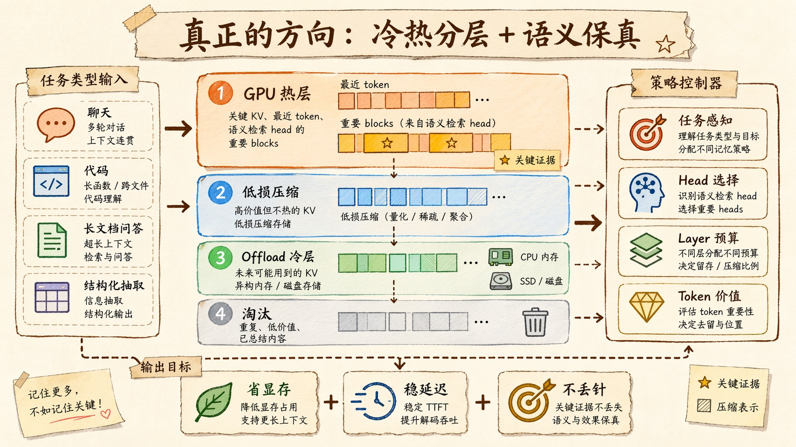

KV Cache 不是越省越好：长上下文为什么会“丢针”？
我最近越来越觉得，长上下文最容易骗人。
你看模型参数页上写着 128K、200K、1M context window，很容易产生一种错觉：
终于可以什么都塞进去了。
一份长 PDF。
一个代码仓库。
几十轮对话。
一堆日志和表格。
你把它们统统塞进上下文窗口里，然后问模型一个很具体的问题。它前面回答得很流畅，逻辑也顺，甚至还能引用一些看起来相关的段落。
但到了真正关键的地方，它漏了。
你明明把证据放进去了。
它就是没抓住。
这类现象现在有个很形象的说法，叫 needle in a haystack，草堆里找针。大模型长上下文评测里，经常会故意把一条关键信息藏在很长的文本中间，看模型能不能找出来。
很多人第一次看到这类问题，会觉得是模型注意力不行，或者 RAG 没做好。
当然可能。
但如果你往推理系统底下再看一层，会发现还有一个更工程的问题：
模型不是只要“看过”上下文就够了，它还得在生成时保住那些关键 token 对应的 KV Cache。
这就麻烦了。
因为 KV Cache 太大了。
显存放不下。
带宽读不动。
并发扛不住。
于是系统必然要想办法压缩、淘汰、量化、Offload。
听起来都很合理。
但问题就在这里。
KV Cache 不是越小越好。
如果你省掉的是废话，系统赚了。
如果你省掉的是那根针，模型就真的找不到了。
长上下文贵的不是读进去，是留下来
前面几篇我一直在讲 KV Cache。
KV Cache 到底缓存什么？
它缓存的是每个历史 token 在每一层 Transformer 里算出来的 Key 和 Value。
为什么要缓存？
因为 Decode 阶段每生成一个新 token，都要回看历史上下文。历史 token 的 K/V 如果不缓存，就要反复重算，成本会爆炸。
所以 KV Cache 本来是一个加速机制。
但到了长上下文时代，它又变成了成本中心。
你上下文越长，历史 token 越多，KV Cache 越大。每一步 Decode 都要读越来越长的历史 KV。显存占用、显存带宽、调度复杂度、跨节点迁移，都会一起上来。
这就是一个很反直觉的地方。
长上下文窗口变大，并不代表模型的“记忆”免费变大。
它只是允许你把更多 token 放进系统里。
至于这些 token 对应的内部状态怎么保存，怎么读取，怎么压缩，怎么迁移，怎么淘汰，那是推理系统要付的钱。
而且这笔钱不是小钱。
标准 attention 下，KV Cache 大小和上下文长度线性增长。即使现代模型用了 GQA、MQA 这类结构，把 KV 头数降下来，长上下文的缓存压力仍然很重。
所以工程系统一定会想办法省。
压成 8bit、4bit、2bit。
只保留一部分 token。
把冷 KV 搬到 CPU 或者其他存储。
不同层、不同 head 给不同预算。
这些方向都很正常。
但它们共同面对一个问题：
你怎么知道哪些 KV 不能动？

为什么不能简单丢掉旧 token
最直觉的想法是，旧 token 不重要。
对话越往后，越新的信息越重要。那是不是可以把前面的 KV Cache 丢一丢？
有些场景确实可以。
闲聊里前几轮寒暄，可能没那么重要。某些工具调用的中间日志，过了当前步骤也没必要一直留着。一些重复文档片段，压缩掉问题不大。
但长上下文最危险的地方，是关键证据不一定在最近的位置。
它可能在开头。
也可能在中间。
甚至可能是一段看起来很普通、但后面问题刚好要用到的句子。
代码仓库分析就是典型例子。
你让模型读一堆文件，最后问一个 bug 为什么发生。真正关键的线索，可能藏在某个配置文件的一行默认值里，也可能藏在一个很早就定义过的接口约束里。
如果 KV Cache 管理策略只相信“近的更重要”，就容易把这类东西处理掉。
然后模型后面生成的时候，看起来仍然很流畅。
但它的依据已经少了一块。
这也是长上下文让人不安的地方。短上下文模型不知道，就是不知道。长上下文模型有时候更像是“看过，但没记住”。它说话的样子没有变，错得却更隐蔽。
这和人类记忆有点像。
你读完一本书，别人问你一个细节。你可能有印象这本书讲过，但具体在哪一页、那个限定条件是什么，你想不起来。
大模型当然不是人。
但 KV Cache 管理如果把关键中间状态压坏或丢掉，表现出来的效果，确实很像“想不起来”。

Key、Value、Head、Layer，不是同一种东西
为什么 KV Cache 压缩不能一刀切？
因为 KV 里面的东西并不均匀。
先看 Key 和 Value。
Key 更像索引，决定当前 Query 应该去哪些历史位置找信息。
Value 更像内容，真正承载被取回来的信息。
这两个东西的分布并不完全一样。KVQuant 这类工作之所以会专门研究 Key 和 Value 的量化策略，就是因为它们不是同一种张量。你不能假设 K 和 V 用同一种低比特压缩，效果就一定一样。
再看不同 attention head。
Transformer 里每一层都有多个 attention head。表面上它们都在做 attention，但功能并不完全一样。
有些 head 更像局部模式捕捉器，关注附近 token。
有些 head 更像结构头，关注格式、边界、段落位置。
还有一些 head，更像语义检索头。它们会在长上下文里抓关键证据，尤其是开头、中间、结尾那些对最终答案有用的位置。
CompressKV 这类研究很有意思的地方就在这里。它不是简单说“保留最近 token”，而是试图区分哪些 head 对语义检索更关键，然后用这些 head 的注意力模式指导 KV Cache 压缩。
你想想看，这个思路背后其实有个很强的判断：
不是所有注意力头都同等重要。
不是所有 token 都同等重要。
不是所有层都同等重要。
所以 KV Cache 压缩真正难的地方，不是把矩阵变小。
而是判断哪里不能随便变小。
这一步如果做错，省下来的显存会变成准确率上的债。

量化救显存，但不保证救记忆
KV Cache 优化里最容易理解的一条路线，是量化。
原来用 fp16 或 bf16 存 KV，一个数 2 字节。现在压成 8bit、4bit，甚至 2bit，显存马上降下来。
这听起来很香。
KVQuant 的目标就很直接：把 KV Cache 压到低比特，让长上下文推理可以撑到非常夸张的长度。TurboQuant、KVTC 这类方向也都在往更高压缩率、更低误差、更少训练依赖上推进。
量化的好处很明确。
显存少了。
带宽压力小了。
同一张卡能扛更多上下文或更多并发。
但量化有一个容易被忽略的问题。
它保留的是“近似值”。
近似得好，模型几乎无感。
近似得差，attention 分数就会变，取回来的内容就会偏。
在短上下文、宽松问答里，这点误差可能不明显。模型上下文少，冗余多，错一点也能靠语言先验补回来。
但在长上下文精确检索里，误差会更危险。
因为你不是让模型泛泛总结，而是让它找到某个具体事实、某个具体变量、某个具体限定条件。
这时候，一点点 attention 偏移，都可能让模型错过那根针。
所以量化不是不能做。
恰恰相反，它一定会成为主流。
但专业的做法不是“能压多低压多低”，而是要问：
哪些层能压狠一点？
哪些 head 不能压太狠？
Key 和 Value 要不要分开处理？
长文档检索和普通聊天能不能用同一套量化策略？
这才是问题。
省显存只是第一层收益。
不伤关键证据，才是第二层难点。
淘汰不是清垃圾，是做价值判断
第二条路线，是淘汰。
既然 KV Cache 太大，那就不可能所有 token 都永久留在 GPU 里。
有些 token 要被保留。
有些 token 要被压缩。
有些 token 要被踢出去。
听起来像缓存系统的经典问题。
数据库有 Buffer Pool，操作系统有页面置换，CPU 有 Cache。满了就要淘汰，常见策略是 LRU、LFU 之类。
但 KV Cache 的淘汰比这些更微妙。
因为它淘汰的不是一个普通数据块。
它淘汰的是模型后续生成时可能用到的上下文证据。
传统缓存系统里，一个页面被淘汰了，大不了下次再从磁盘读回来。KV Cache 不一样。某些 KV 一旦被丢掉，你要么重新计算，要么就真的失去这段中间状态。
如果是在在线 Decode 过程中，这个代价可能非常高。
更麻烦的是，KV 的价值不是静态的。
同一段文本，在不同问题下价值不同。
一段 API 文档，对闲聊问题没有意义；对某个工具调用 bug，就可能是关键证据。
一段系统提示词，在普通续写里没那么显眼；在 Agent 权限边界判断里就非常重要。
所以淘汰策略不能只看位置。
也不能只看最近访问。
它需要理解任务。
至少要近似理解任务。
这也是为什么现在一些 KV Cache 压缩工作开始引入语义信号、attention head 选择、任务感知预算。它们其实都在做同一件事：
给记忆分级。
不是所有历史都值得留。
但关键历史绝不能随便丢。
Offload 是容量解药，也是延迟毒药
第三条路线，是 Offload。
GPU 显存放不下，那就把一部分 KV Cache 搬出去。
搬到 CPU 内存。
搬到其他 GPU。
甚至搬到更远的层级。
这个思路很自然。GPU 显存贵，CPU 内存大。把冷 KV 放到 CPU，等需要的时候再拿回来，看起来很合理。
但 Offload 有一个很朴素的代价：
搬运需要时间。
尤其是在 Decode 阶段，模型每一步都很敏感。你要生成下一个 token，却发现需要的 KV 不在 GPU 上，要先从外面搬回来，那延迟马上就会上来。
所以 Offload 不是免费扩容。
它是在用延迟换容量。
对于一些吞吐优先的离线任务，这个交换可能划算。
对于在线聊天、代码助手、Agent 工具调用，它就要非常小心。
更关键的是，Offload 不只影响速度，也可能影响准确率。
2026 年关于 context-intensive tasks 的 KV Cache Offloading 研究就提醒了一个很现实的问题：在信息抽取、长文档理解这类任务里，缓存管理策略如果让关键上下文访问变慢或变不稳定，最终表现出来的不只是系统慢，还有回答质量下降。
这个判断很重要。
因为很多人会把 Offload 当成纯系统优化。
显存不够，搬出去。
带宽不够，分层。
听起来像内存管理。
但在 LLM 推理里，内存管理会直接改变模型可用的上下文状态。
你管理的不是普通缓存。
你管理的是模型生成答案时的证据现场。

真正的方向，是冷热分层加语义保真
所以我现在更愿意把 KV Cache 优化理解成一件事：
在有限资源里做记忆管理。
不是简单压缩。
不是简单淘汰。
也不是简单 Offload。
而是把不同价值的 KV 放到不同层级里。
最热、最关键、最容易影响下一步生成的 KV，留在 GPU 上。
价值高但访问频率低的，低损压缩。
暂时不热但未来可能用到的，Offload 到 CPU 或其他层级。
明显低价值、重复、已经被总结过的，才考虑淘汰。
这听起来很像操作系统。
但比操作系统更难。
操作系统通常不知道一个页面的语义，它只看访问模式。KV Cache 管理如果只看访问模式，可能不够。因为一个 token 被访问少，不代表它不重要。那根针可能很久没人看，但真正问到它的时候，它就是全部。
所以未来的 KV Cache 系统，大概率会越来越任务感知。
它会看 attention。
看 head。
看 layer。
看 token 类型。
看用户正在做的是闲聊、代码、长文档问答，还是结构化抽取。
同样是 128K 上下文，任务不同，缓存策略就不该一样。
这也是我觉得这个方向有意思的地方。
KV Cache 本来是一个很底层的推理优化。
但越往后，它越不像纯底层优化。
它开始连接模型结构、任务语义、系统调度、硬件层级。
这已经不是“缓存一下更快”的问题了。
这是大模型时代的记忆系统工程。

写在最后
长上下文时代有一个很容易被忽略的事实：
模型能看多少，不等于它能稳定用多少。
你把 100K token 塞进去，只是第一步。
系统还要决定这些 token 对应的 KV 怎么存、怎么读、怎么压、怎么迁移、怎么淘汰。
如果这些决策做得粗糙，模型就会出现一种很奇怪的状态：
它好像看过。
它也能说。
但关键细节就是漏了。
这就是“丢针”。
所以 KV Cache 优化真正的目标，不是把缓存越压越小。
而是在足够省的前提下，别把那根针弄丢。
省显存是工程能力。
保住关键证据，才是系统能力。
长上下文真正拼的，也许不是窗口大小。
是记忆管理的水平。
参考资料
- CompressKV: Semantic Retrieval Head Guided KV Cache Compression. https://arxiv.org/abs/2606.24467
- KV Cache Offloading for Context-Intensive Tasks. https://arxiv.org/abs/2604.08426
- KVQuant: Towards 10 Million Context Length LLM Inference with KV Cache Quantization. https://arxiv.org/abs/2401.18079
- TurboQuant: extreme compression / online vector quantization for KV cache. https://research.google/blog/turboquant-redefining-ai-efficiency-with-extreme-compression/
- KVTC: Transform Coding of KV Cache for Long-Context LLM Inference. https://arxiv.org/abs/2511.01815